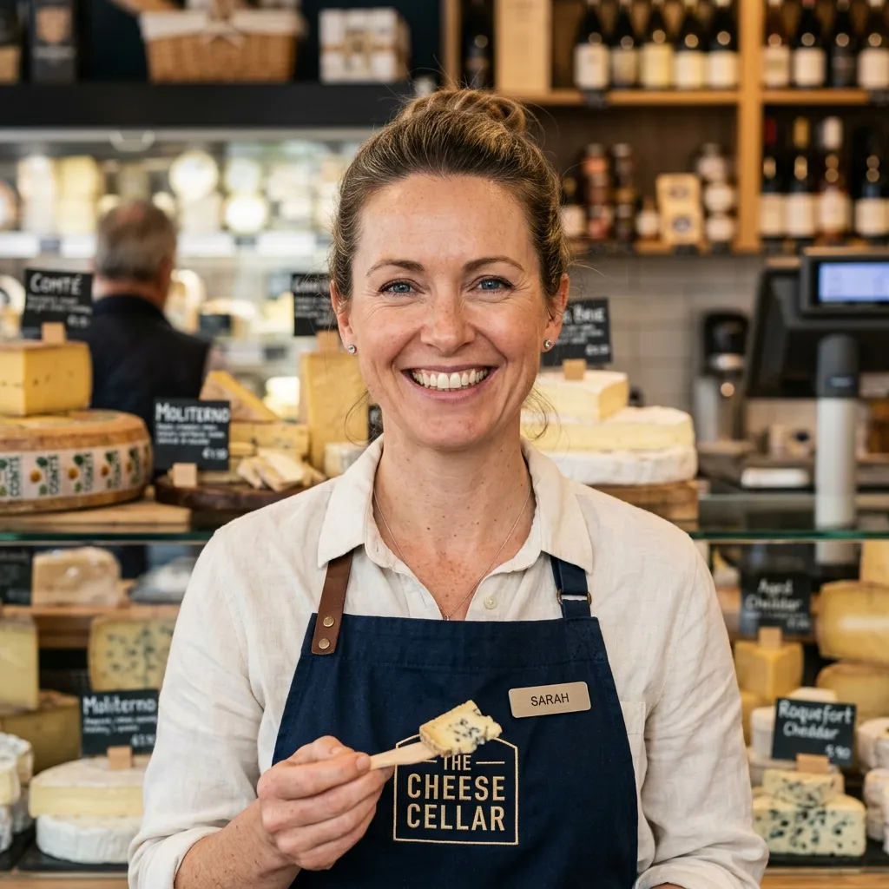

Perfect
Pairings.
Unlock the intricate symphony of flavors. Discover how our master curators pair artisanal cheeses and cured meats with world-class wines.
Explore the MatrixCheese & Wine Matrix
Match the texture and intensity of your cheese with the perfect varietal.
Fresh & Soft
Goat Cheese, Mozzarella, Ricotta
Bloomy Rind
Brie, Camembert, Robiola
Firm & Aged
Aged Cheddar, Gruyère, Manchego
Blue & Pungent
Roquefort, Gorgonzola, Stilton

Meat & Wine Pairings
Prosciutto & Melon
The delicate, salty sweetness of Prosciutto di Parma pairs beautifully with light, crisp bubbles. Pair with: Prosecco or Dry Rosé.
Spicy Salami & Chorizo
Bold, spicy meats need a wine that can stand up to the heat without clashing. Pair with: Zinfandel, Malbec, or Grenache.
Rich Pâté & Terrines
Earthy, rich liver mousses cut perfectly against high acidity or complement deep, robust flavors. Pair with: Pinot Noir or Chardonnay.
Seasonal Pairings
Curated selections that align with the climate and seasonal harvests.

Spring Awakening
Goat Cheese & Berries with Sauvignon Blanc.

Summer Sun
Burrata & Peaches with chilled Provence Rosé.

Autumn Harvest
Aged Gouda & Figs paired with Pinot Noir.

Winter Fireside
Blue Cheese & Walnuts with Vintage Port.
Hosting Recommendations
Mind the Temperature
Serve white wines between 49-55°F (9-12°C). Red wines should be served slightly cooler than room temp, around 60-65°F (15-18°C). Take your cheese out of the fridge 30 mins before serving.
Order of Tasting
Always start with the lightest cheeses (fresh, goat) and lightest wines (sparkling, crisp whites). Progress to heavier, aged cheeses and robust reds. Finish with blue cheese and sweet dessert wines.
Palate Cleansers
Provide water crackers, plain crostini, or sparkling water between distinct wine and cheese pairings to refresh the palate. Avoid flavored or strongly seasoned options, as they can interfere with the delicate tasting notes.
Expert Picks

Julian Vance
Lead Sommelier"If you are serving a highly diverse grazing table and can only pick one wine to please everyone, go with a Dry Rosé or a very crisp Champagne. Their acidity cuts through fat effortlessly and they bridge the gap between light cheeses and heavy meats perfectly."

Sophia Laurent
Artisan Cheesemonger"When pairing with intense blue cheeses, don't try to fight the pungency with a dry red. Instead, pair it with a sweet Sauternes or a late-harvest Riesling. The contrast between the salty, sharp cheese and the honeyed sweetness of the wine is absolute heaven."
Pairing by Event Type
Curated selections for the most common gathering styles.

The Wedding Reception Spread
Weddings require universally appealing pairings that accommodate a massive variety of palates while feeling inherently celebratory.
-
Blanc de Blancs Champagne
To pair with triple-crème brie during cocktail hour toasts.
-
Light Bodied Pinot Noir
Versatile enough to pair with both smoked salmon and aged gruyère.

Download Our Complete Pairing Guide
Get a printable 10-page cheat sheet mapping over 50 specific cheeses and charcuterie items to their perfect wine varietal.